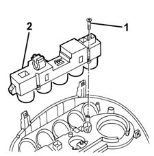

5505A24 w/l and service switch mount - r+r
- Path
- Procedures > 55 ELECTRICAL EQUIPMENT > 5505 INSTRUMENT/GUAGE ELECTRICAL WIRING > 5505A multi-function components > 5505A24 w/l and service switch mount - r+r
- Kind
- repair procedure (removal / refitting; the operation number is the code)
- Applies to
- all engines; all production periods
- Interactive page
- https://sloeber94.github.io/elrnDB-fMltpl/en/#/2891867
Applies to: all engines; all production periods
 Removing
Removing
 Refitting
Refitting2125C24 gear lever knob - r + r
7065C10 air conditioning control panel - r+r
1. Undo the bolts fixing the support to the bodyshell.
2. Remove the switch mounting.

Applies to: all engines; all production periods
Refitting
RemovingCheck that the switch mounting is not damaged and, if necesary, conduct an electrical test on it.
Position the switch mounting.
Tighten the bolts fixing the switch mounting.